| 时间 | 分类 | 标题 | 副标题 | 正文 | 图片 |
|---|---|---|---|---|---|
| 2022-06-23 19:44:00 | Opinion | The Supreme Court Vindicates the Second Amendment | A 6-3 majority recognizes a right to carry guns in public for self-defense. | The Supreme Court’s 6-3 ruling Thursday on gun rights boils down to this: The Second Amendment doesn’t disappear when you walk out your front door. Stated that way, it sounds obvious, but many appeals judges have disagreed. For a frustrating decade, the Supreme Court was too gun-shy to set them straight, but Justice Clarence Thomas’s majority opinion was worth the wait. New York State Rifle and Pistol Association v. Bruen challenged the Empire State’s regulations on carrying a firearm in public. Open carry in New York is banned. With certain exceptions, such as for judges, getting a permit to carry a handgun that’s concealed requires demonstrating “proper cause.” That has been interpreted to mean “a special need” for self-defense, beyond that of “the general community or of persons engaged in the same profession.” |
|
| 2022-06-23 19:40:00 | Opinion | Coal Energy Rides to Germany’s Rescue | Berlin braces for a cutoff of Russian gas, but the nuclear power taboo remains. | In Germany even the energy emergencies are well-organized. So it is that Berlin Thursday moved into the second of three phases in what is meant to be an orderly procedure for managing fuel shortages this winter. They hope. Economy and Climate Minister Robert Habeck raised the alert level amid a reduction in natural gas shipments from Russia. Moscow says a mechanical part is stranded in Canada due to Western sanctions imposed after Vladimir Putin’s Ukraine invasion, but everyone else knows better. |
|
| 2022-06-23 19:01:00 | Opinion | ‘Chains’ Review: Yearnings Unlocked | In Elizabeth Baker’s 1909 drama, restless middle-class Edwardians consider abandoning security for a more adventurous path | New York When theaters shut down more than two years ago, the Mint Theater Company, long cherished by aficionados for its dedication to resurrecting largely forgotten but durable works, was about to produce the American premiere of “Chains,” the second in its three-play series dedicated to the British playwright Elizabeth Baker. |
|
| 2022-06-23 18:44:00 | Opinion | Chicago Loses a Business Citadel | Ken Griffin has had enough of the high-crime Windy City and moves his hedge fund to Miami. | The first step to recovery is supposed to be admitting you have a problem. But Illinois Gov. J.B. Pritzker still won’t, even after billionaire Ken Griffin on Thursday said he’s moving his Citadel hedge fund and securities trading firm to Miami from Chicago. Mr. Griffin noted in a letter to employees that many workers had clamored to relocate to other offices, including Miami. They don’t merely want to escape Chicago’s winters. Many are literally running for their lives amid a crime surge that shows no signs of abating. Thefts so far this year in Chicago have increased 65% compared to last year. |
|
| 2022-06-23 18:43:00 | Opinion | You Won Your Gun Case. You’re Fired | Kirkland & Ellis tells Paul Clement and a partner to dump their Second Amendment clients. They refuse and resign. | A 6-3 victory at the Supreme Court vindicating a constitutional right is usually cause for congratulations, but not these days at Kirkland & Ellis, the giant white-shoe law firm. The firm has rewarded partner Paul Clement for his triumph Thursday in the big New York gun-rights case (see nearby) by telling him to drop his gun clients or leave the firm. As Mr. Clement and his litigation partner, Erin Murphy, explain nearby, they’re leaving the firm rather than dump their clients. That’s the honorable and ethical decision. |
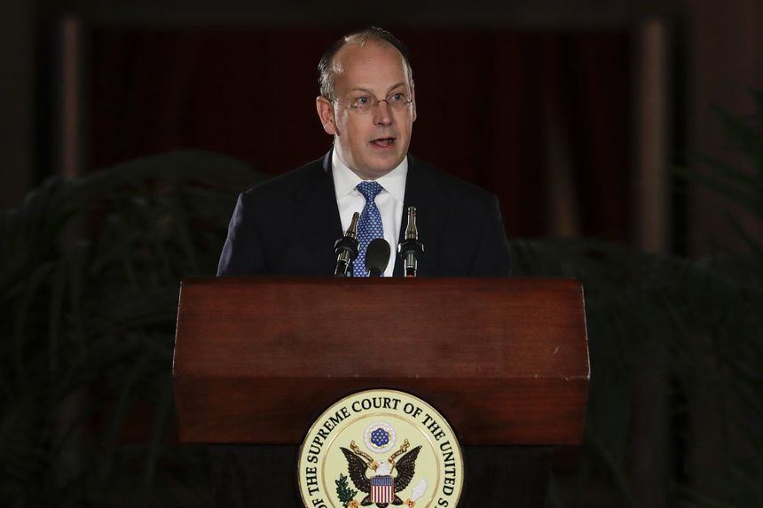 |
| 2022-06-23 18:28:00 | Opinion | Biden Renews Obama’s Attack on Campus Due Process | New Title IX regulations would eliminate cross-examination, live hearings and other basic rights. | Judge José Cabranes of the Second U.S. Circuit Court of Appeals fired off a blistering critique of how colleges and universities adjudicated sexual-misconduct allegations during the Obama administration. Thanks to “regulatory diktats” imposed by the Department of Education in 2011, Judge Cabranes wrote in a concurring opinion earlier this month, campus procedures were so devoid of basic due-process protections that they “compared unfavorably to those of the infamous English Star Chamber.” The Biden administration is bringing back these sham hearings. On Thursday the Education Department’s Office for Civil Rights proposed new regulations governing how colleges and universities that receive federal funds—which is nearly all of them—must respond to allegations of sexual misconduct under Title IX, which prohibits sex discrimination. The new regulations would eliminate or weaken basic procedural protections for students accused of sexual misconduct. |
|
| 2022-06-23 18:27:00 | Opinion | A Biden Retreat Could Lower Gas Prices | His war on fossil fuels has proved costly for American consumers. | President Biden urged CEOs of the nation’s leading energy producers and refiners to take “immediate action” to increase the supply of gasoline. In a letter last week, he wrote that his administration “is prepared to use all reasonable and appropriate Federal Government tools and emergency authorities to increase refinery capacity and output in the near term.” Yet Mr. Biden’s own policies constrained energy supplies. The U.S. is blessed with an abundance of oil, natural gas and coal that helped us win World War II and gave our citizens the highest living standards in the world. But American families are paying historically high prices at the pump. Mr. Biden can lead the nation out of this self-imposed energy crisis by returning to the policies favored by his predecessors and by many in our party. |
|
| 2022-06-23 18:26:00 | Opinion | The Law Firm That Got Tired of Winning | After our Supreme Court victory protecting the Second Amendment, we were told to ditch our clients or leave. | We are blessed to have represented before the Supreme Court a wide variety of clients, from large corporations and religious orders to criminal defendants and Native American groups. After we prevail before the high court, we generally receive a round of congratulatory messages from law-firm colleagues for a job well done, especially when we have helped our clients vindicate their fundamental constitutional rights. This time around, we received a very different message from our law firm. Having just secured a landmark decision vindicating our clients’ constitutional Second Amendment rights in New York State Rifle & Pistol Association v. Bruen, we were presented with a stark choice—withdraw from representing them or withdraw from the firm. There was only one choice: We couldn’t abandon our clients simply because their positions are unpopular in some circles. |
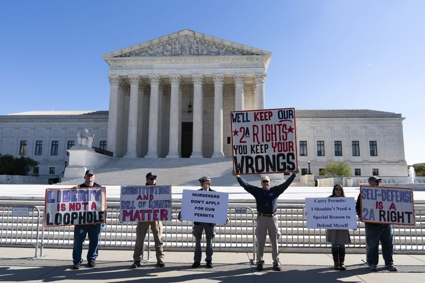 |
| 2022-06-23 18:23:00 | Opinion | Firefighters Always Answer the Call | Jack Donahue, 68, is still volunteering—just like his father. | I grew up across from a firehouse. When the siren wailed in our suburban New Jersey town, the volunteer firefighters scrambled to park their cars and leap over a wooden fence to the garage doors. The candy-apple red fire engine would rumble out within minutes. Our local firefighters hung onto the truck as they took off to save the day. This spectacle never got old, no matter my age, but only now do I appreciate how the firefighting tradition crosses generations. One firefighter I admired lived three houses from ours, so he dashed to the firehouse on foot. John Donohue dropped out of high school at 16 and lied about his age to join the Navy during the Korean War. He served the Fair Lawn Volunteer Fire Department for 21 years, during which he rescued two firefighters trapped in a burning diner and later served as fire chief. He frequented events at the firehouse long after his retirement in 1981. |
 |
| 2022-06-23 18:21:00 | Opinion | A Good Week for Religious Freedom | The Supreme Court reaffirms that states can’t disfavor schools on account of faith. | The Supreme Court on Tuesday affirmed that the state of Maine may not selectively discriminate against religious schools or the families who choose to send their children to them. Carson v. Makin is long overdue but still a welcome win for educational choice and pluralism. Maine operates a tuition-assistance program for parents who live in school districts without their own secondary schools. The parents choose a school, public or private, and the state helps them pay to attend. A range of schools are eligible, including ones outside Maine, and many offer elite programming and plush amenities that differ dramatically from public offerings. Yet the state refuses support to families that choose a “sectarian” school—one that “promotes the faith or belief system with which it is associated” or “presents the material taught through the lens of this faith.” |
|
| 2022-06-23 18:15:00 | Opinion | ‘Corsicana’ Review: Death and Texas | In Will Arbery’s new work, directed by Sam Gold, a mother’s death leaves a void in the lives of her adult children as big as their home state | New York |
|
| 2022-06-23 15:30:00 | Bank of Mexico Steps Up Pace of Interest-Rate Increases | Central bank board votes unanimously to lift overnight interest-rate target from 7% to 7.75% | MEXICO CITY—The Bank of Mexico raised its reference interest-rate at a faster pace as inflation rose to a new 21-year high and inflation expectations increased further. The central bank’s five-member board of governors voted unanimously Thursday to lift the overnight interest-rate target by three quarters of a percentage point to 7.75% in a ninth consecutive increase, and signaled that more increases are to come. “For... |
||
| 2022-06-23 13:11:00 | Opinion | Could This Be an Antebellum Age? | Political manners seem to be growing subservient to the threat of violence. It feels like the 1850s. | In John Milton’s “Paradise Lost,” Lucifer—who only yesterday had been God’s favorite—consoles himself with this thought: “The mind is its own place and in itself / Can make a Heav’n of Hell, a Hell of Heav’n.” The United States of America, another of God’s erstwhile favorites, now and then performs the same trick of the mind. At the moment, the country seems committed to the second option, as if united in a natural preference for hell. It’s happened before. The American theme now is violence and the promise of violence (a mirror of the pandemic, perhaps). Homicide rates are dramatically up, not merely because of the mass shootings but in the routine, even ritualized weekend carnage in Chicago and other cities. |
|
| 2022-06-23 13:10:00 | Opinion | The Senate Gun Bill Is Terrible | Liberals and conservatives alike should oppose it. | When mass shootings such as Uvalde happen, a rallying cry emerges for Congress to do something—anything—to prevent such tragedies in the future. On Tuesday senators introduced the Bipartisan Safer Communities Act—their effort to do something. But when your sole rallying cry is to do something, the thing you do may be worse than the status quo. The Bipartisan Safer Communities Act is a terrible bill, and in its current form, it ought to be defeated by a bipartisan political coalition of Congress. Liberals should hate the bill because most of its gun-control provisions are antithetical to their criminal-justice reform agenda. The law expands the categories of those to whom it is unlawful to sell a gun or ammunition to include anyone convicted of a felony as a juvenile. This will ensnare many because the modern definition of a “felony” is exceptionally broad and includes offenses that aren’t particularly serious. The bill also changes the federal prohibition on selling firearms to those who have been involuntarily committed to a mental institution. While it excludes involuntary commitments before age 16, the bill significantly strengthens the enforcement of the prohibition against those involuntarily committed between 16 and 18. |
|
| 2022-06-23 12:59:00 | Opinion | My Grandfather’s Field Proves GMOs’ Worth | Today more than 90% of many crops in the U.S. are genetically modified seed. | Regarding Terry Wanzek’s “A Solution to the Wheat Shortage: Genetically Modified Crops” (Cross Country, June 11). My grandfather was crushed to death in a farm accident in Minnesota during harvest on Oct. 12, 1956, his 64th birthday. A few days later some 25 neighbors arrived to pick the corn. The local paper covered the event and reported a “remarkable” yield of 60 bushels an acre. Last fall his grandson, who now owns the farm, harvested 270 bushels an acre on the same field where the accident occurred. The enormous yield was due to a number of factors, including the use of genetically modified seed. |
|
| 2022-06-23 12:59:00 | Opinion | The Fed Changed Its Mandate and Inflation Followed | Recasting its dual mandate as a short-term goal for unemployment was a distraction. | Regarding “How U.S. Officials Got Inflation Wrong” (U.S. News, June 14): In 2015 the Federal Reserve raised interest rates, predicting that inflation would return to 2%. Yet from 2015 to 2019, inflation rates surpassed or reached 2% only about 26% of the time. In 2017 and 2018, however, the Fed raised the federal-funds rate by 25 basis points at nearly every other meeting. It didn’t look at past policy errors. By mid-2019, the Fed realized it had overtightened and cut rates. In 2020 Covid struck. The Fed conducted town-hall meetings in 2019 and 2020 called “Fed Listens,” after three years of deafness. Progressives pressured the Fed to not be pre-emptive—essentially endorsing President Trump’s past complaints. This time the Fed adopted a policy framework emphasizing employment. |
|
| 2022-06-23 12:58:00 | Opinion | Budget Discipline Means Fewer Oil Rigs Pumping | There were 740 rigs operating on June 17—still below the prepandemic level. | In “How the U.S. Turned the Tables on OPEC” (op-ed, June 10), Paul Dabbar credits the petroleum industry’s innovation, Washington’s pro-supply policies and increased investment for the oil and gas supply boom during the past two decades. But he makes no mention of Wall Street’s turn away from oil and gas investment, which started in 2019. Faced with high expenses and low returns during the shale boom, investors began to insist on budgetary discipline. Petroleum companies eventually complied. The number of rigs drilling for oil and gas peaked in November 2018 at 1,077, slowly fell to 771 in March 2020 and crashed to a low of 250 in August. There were 740 rigs operating on June 17—still below the prepandemic level. |
|
| 2022-06-23 11:59:00 | Opinion | Washington Post: Biden Economists Oppose Biden Tax Plan | Now the president is trying to shame gas station owners. | People wondering who’s really in charge at the White House may be reassured to know that the emerging economic policy appears to be the work of a career politician. In the Washington Post Tyler Pager, Jeff Stein, Tony Romm and Cleve Wootson report: |
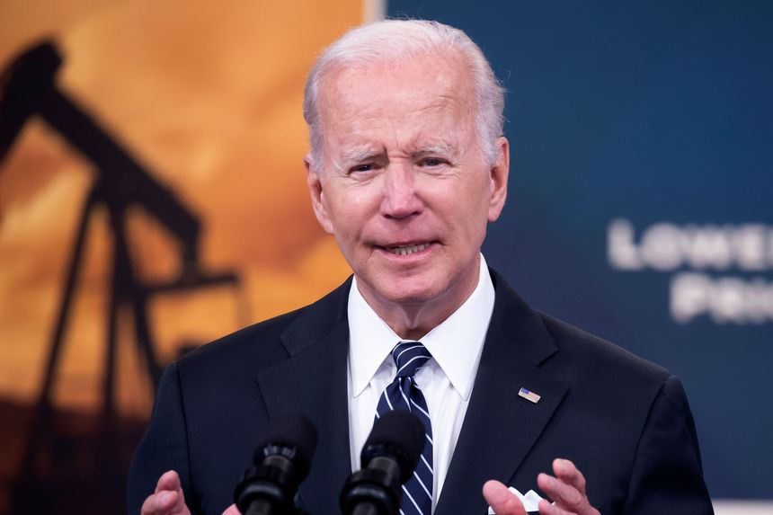 |
| 2022-06-23 08:00:00 | Logistics Report | Sweden’s Einride to Test Autonomous Trucks on U.S. Roads | The company will put its chunky, self-driving vehicles on short runs between warehouses in Tennessee under an agreement with GE Appliances | ||
| 2022-06-23 06:13:00 | Pro Bankruptcy | Bankruptcy Judge Advances $14 Billion YPF, Repsol Pollution Lawsuit to Trial | A chapter 11 trust must prove that YPF and Repsol caused environmental liabilities to go unpaid by a former corporate subsidiary, a bankruptcy judge says | A bankruptcy judge sent the former parent companies of Maxus Energy Corp. to trial over creditor allegations that they stripped the now-defunct subsidiary of assets and should pay as much as $14 billion for its obligation to clean up New Jersey’s Passaic River. |
|
| 2022-06-23 06:00:00 | Sustainable Business | Google’s Plan for 24/7 Carbon-Free Energy Ran Into Headwinds in 2021 | Project delays held back growth of carbon-free electricity for data centers; Google says long-term trend is going in the right direction | ||
| 2022-06-22 19:23:00 | Risk & Compliance Journal | Revamped DOJ Compliance Unit Takes On Greater Role in Corporate Settlements | The Justice Department’s corporate enforcement, compliance and policy unit is hiring as it assumes more responsibility in overseeing settlements with companies | 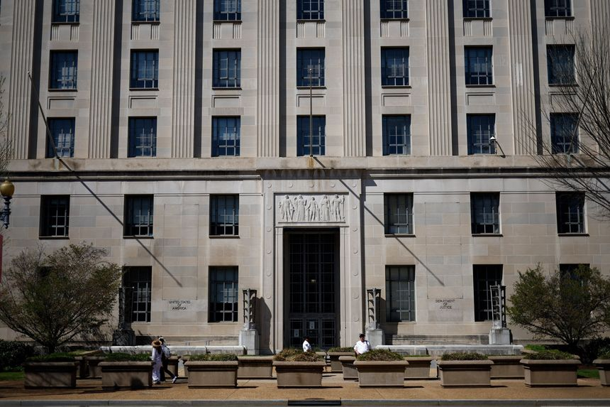 | |
| 2022-06-22 18:47:00 | Economy | Senators Press Fed Chair Jerome Powell on Reforms for Regional Fed Banks | Senators take aim at how the leaders of regional Fed banks are selected | Federal Reserve Chairman Jerome Powell is facing pressure from both Senate Democrats and Republicans over how chiefs of the 12 regional Fed banks and their board members are selected. On Tuesday, Senate Democrats including Ohio Sen. Sherrod Brown, chairman of the Senate Committee on Banking, Housing, and Urban Affairs, and New Jersey Sen. Robert Menendez, a senior member of that panel, wrote to Mr. Powell and said the Fed needs more diversity in the leadership ranks of its regional banks. |
|
| 2022-06-22 18:42:00 | Brookfield Raises $15 Billion Fund to Back Clean-Energy Transition | The Brookfield Global Transition Fund invests in the transformation of carbon-intensive industries, as well as the development and accessibility of clean energy | Brookfield Asset Management Inc. raised $15 billion for its first dedicated impact fund that focuses on investments supporting the transition to clean energy, including capital reserved for the firm’s private-wealth channel. The final tally for the Brookfield Global Transition Fund exceeds a $12.5 billion cap Brookfield indicated last year, making it among the largest private funds dedicated to the transition to a carbon-free economy. Significant... |
||
| 2022-06-22 18:28:00 | Opinion | Jerome Powell Takes a Pounding | Elizabeth Warren warns the Federal Reserve Chairman that Democrats will blame him for a recession. | Everybody in Washington loves the Federal Reserve when the cost of money is zero. But when interest rates are rising amid high inflation, affection is scarce, as Chairman Jerome Powell learned before the Senate Banking Committee on Wednesday. Republicans gave him grief for letting inflation get out of control, which is fair enough. “Clearly you are aware that you are going to be the person that takes the fall if inflation is not brought under control,” Sen. Mike Rounds (R., S.D.) told Mr. Powell, who promised to stay on the Fed’s new anti-inflation course. |
|
| 2022-06-22 18:16:00 | Opinion | A Sensible Senate Gun Deal | The bill focuses on denying guns to those who pose a serious risk, offering money to states for red-flag laws. | The Senate voted 64-34 late Tuesday to debate a bipartisan gun violence bill, and its principal virtue is that it focuses on the source of too many mass shootings: young, troubled men. The bill covers three main areas: money for states to implement so-called red-flag laws and beef up mental-health services; money for enhanced school safety; and additional scrutiny of gun buyers who are under the age of 21 or domestic abusers, as well as enhanced penalties for purchasing a gun as a straw buyer or trafficking in guns. |
|
| 2022-06-22 18:14:00 | Opinion | Fighting the Last Tobacco War | Team Biden goes after e-cigarettes and nicotine, as if it had nothing else to do. | The Biden Administration’s instinct is always to shoot business first and clean up the unintended consequences later. Its example this week—there’s an example every week—is to tease regulation to slash nicotine in cigarettes followed by a leak of its plan to ban Juul e-cigarettes. Nobody disputes that tobacco is harmful, especially for young people. But misconceived regulation can also boomerang. The 1998 state settlement helped the Big Four Tobacco companies grow profits and cement their market share, as our columnist Holman Jenkins has noted. Big business loves big government. |
|
| 2022-06-22 17:57:00 | Opinion | Working with Wokesters | Do progressive leftists enjoy sharing offices with progressive leftists? | Corporate executives may find it exhausting to deal with the politicized cancel culture of the modern workplace. Would it be any consolation to learn that even people working in the cancellation industry also find it insufferable? Your humble correspondent is still wondering if anyone can name a great civilization built by progressive leftists. In the meantime a look inside Beltway grievance factories suggests that employees at leftist nonprofits are sometimes too busy griping about each other to do the mission-critical work of griping about America. No, this isn’t another exploration of the Washington Post newsroom, but a review of explicitly activist organizations. |
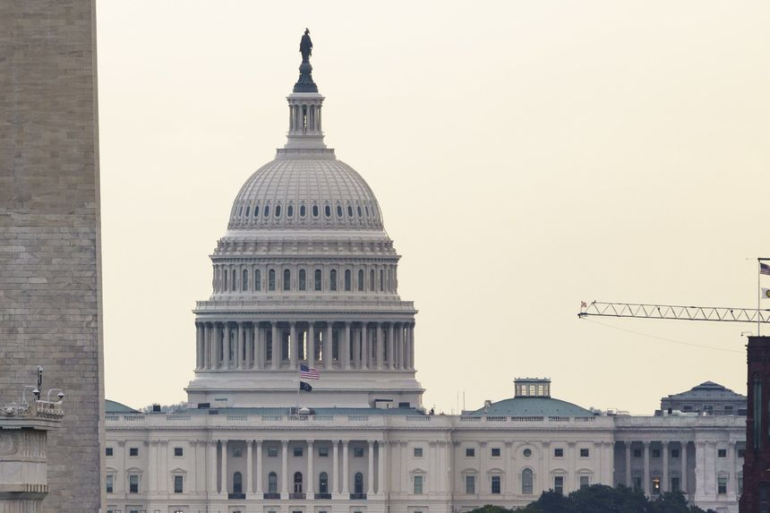 |
| 2022-06-22 17:40:00 | Opinion | A Gas Tax Holiday From Reality | Even Democrats can’t hide their disdain for President Biden’s the latest gas-price gimmick. | Let’s call the roll on President Biden’s ideas to reduce high gasoline prices. He’s tried lobbying the Saudis, to no avail. Releasing oil from the U.S. strategic reserve; the market yawned. Attacking oil and gas companies for not drilling or refining enough, but he also wants to put those companies out of business. Now comes the feeblest effort so far—a White House request on Wednesday that Congress suspend the 18.4 cent a gallon federal gas tax for three months. That’s only long enough to reduce the irritation of drivers, er, voters, every time they fill up the tank during the summer driving season. Has there ever been a more transparently cynical vote-buying policy exercise? Ah, yes, we forgot student-loan cancellation. |
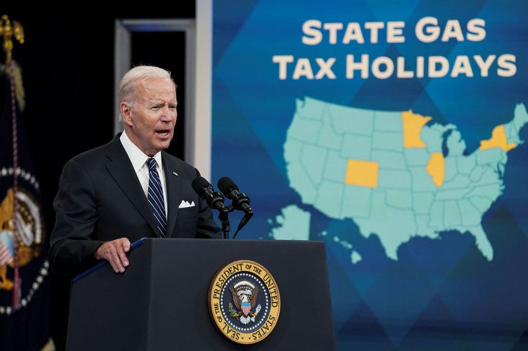 |
| 2022-06-22 16:33:00 | Opinion | The Revenge of the Locked-Down Voters | The Covid pandemic revealed how complicated the private economy is—and how easy it is to wreck it. | The good news for Joe Biden is, or was, that he won the 2020 election. The bad news for Joe Biden, well, let’s just say he’s got company in the disapproval dumpster. All over the world, voters are engaging in what can only be called payback to the national leaders who ran their lives during the pandemic. After Mr. Biden’s two years at the top, some 70% of the population thinks the country is headed in the wrong direction, an astonishing number. On Sunday, France’s Emmanuel Macron’s centrist party lost its legislative majority, with gains for protest-vote parties on the left and right. In Colombia, the far left came to power this week with the election of a former M-19 guerrilla. |
|
| 2022-06-22 16:32:00 | Opinion | Biden Got the Energy Market He Wanted | Since day one, he’s tried to limit fossil-fuel supplies, and we’re all paying for it. | Trying to limit the political damage of skyrocketing gasoline prices, the Biden administration on Sunday trotted out Energy Secretary Jennifer Granholm. They’d have been better off if she’d gone to Mass. Appearing on CNN’s “State of the Union,” Ms. Granholm said “we need to have increased production, so that everyday citizens in America will not be feeling this pain that they’re feeling right now.” |
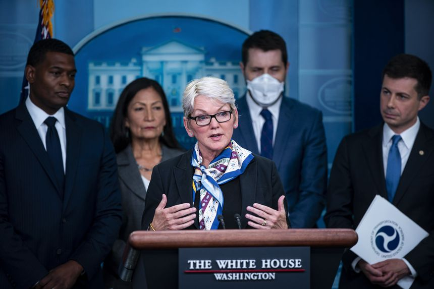 |
| 2022-06-22 16:30:00 | Opinion | Volcker, Powell and the Price of Amnesia About Monetary Policy | The Fed should have heeded the lessons of 1980s inflation. | Is the Federal Reserve reviewing the connection between high inflation and the past two years’ U.S. monetary policy? A reporter asked Fed Chairman Jerome Powell that question at a June 15 news conference. After acknowledging that the Fed is doing so “very carefully,” the chairman deflected. He said that for decades inflation was “dominated by disinflationary forces,” but recent history has been plagued by “extraordinary shocks.” Pointing to the pandemic, the war in Ukraine and shutdowns in China, he concluded: “We’re aware that a different set of forces are driving the economy.” Yet Mr. Powell neglected to mention the expansionary monetary and fiscal policies of 2020 and 2021 that surely contributed to upward pressure on prices. More important, he missed the main culprit: the Federal Reserve. The Fed lost control of inflation by abandoning its decadeslong strategy of pre-emptive restraint—that is, tightening before inflation takes hold. That policy, promoted by Fed Chairman Paul Volcker in the 1980s, has delivered price stability for nearly 40 years. |
|
| 2022-06-22 16:28:00 | Opinion | Money for Children’s Education, Not Schools | It’s time to stop writing blank checks for a failing system. | As schools break for summer, it’s a good time to review the return America is getting on its investment in education. The Census Bureau reports inflation-adjusted spending in K-12 education has tripled since 1970 to a record $751.7 billion. Yet barely a third of all fourth-graders across U.S. urban communities can read or do math at grade level. The time has come to reimagine the way we pay for education. Let’s stop writing blank checks to failing school systems. Consider a single mother of two. From kindergarten to high school graduation, the government will spend nearly $250,000 on each of her children. Yet she won’t have much of a say in how the dollars are spent. Without her consent, the bureaucrats who run the public schools will build facilities, hire teachers and plan curriculum that may leave her children far behind their peers, all at exorbitant prices. |
|
| 2022-06-22 16:27:00 | Opinion | Biden Is Practically Engineering a Recession | His regulatory and tax agendas seem designed to negate the good things the economy has going for it. | Most discussion about the possibility of recession focuses on the Federal Reserve’s monetary policies. But there are also factors on the supply side of the economy that may tip the U.S. economy into a recession. Among them are the tax and regulatory policies of the Biden administration. A recession is sometimes defined as a decrease in employment. Other times it is defined as a reduction in real gross domestic product for two quarters or more. Strong labor-force and productivity growth are supply-side factors that make a recession less likely, as is recovery from the pandemic. But increased regulation and increased taxation of capital—two Biden administration policy priorities—are supply-side headwinds that make recession more likely. |
|
| 2022-06-22 16:24:00 | Opinion | Don’t Believe the Obits for Bitcoin | Cryptocurrencies have faced constant volatility. It doesn’t matter for the ideologically committed. | Reports of cryptocurrency’s death have been exaggerated. For those who’ve followed bitcoin since the beginning, the fall from $64,000 to $20,000 is simply another of bitcoin’s “many deaths” (one website has tracked 455 obituaries). Those who bought at the top are asking why bitcoin is only $20,000. This question would have been unfathomable a few years ago. We should ask the opposite question: Why is this internet-created money, started by an unknown programmer on an obscure web forum, trading so high? With millions of dollars in speculation in nonfungible tokens, initial coin offerings and obvious get-rich-quick schemes, it’s easy to forget that bitcoin wasn’t created by people looking to get rich. It was designed by a pseudonymous programmer known as Satoshi Nakamoto, who wanted a money not controlled by government-run central banks. Like gold, the bitcoin network is outside the control of any political entity. There is a predictable rate of money creation, and the number of bitcoins in existence will never exceed 21 million. |
|
| 2022-06-22 16:07:00 | Opinion | The Vice President’s Electoral Count Powers | There was substantial legal scholarship and historical support for my argument long before I advanced it in 2020. | Regarding “The Jan. 6 Committee’s Missing Reform” (Review & Outlook, June 17): The Wall Street Journal editorial board endorses what it takes to be Mike Pence’s view that “The Constitution does not give the Vice President unilateral power to reject electoral votes. The argument to the contrary came from law professor John Eastman.” The editors cite as authorities for Mr. Pence’s view “a former federal appeals judge, the conservative J. Michael Luttig,” who testified that “There was no basis in the Constitution or laws of the United States at all for the theory espoused by Mr. Eastman”; and Greg Jacob, a lawyer for Mr. Pence, who testified that “We examined every single electoral vote count that had happened in Congress since the beginning of the country . . . . No Vice President in 230 years of history had ever claimed to have that kind of authority.” |
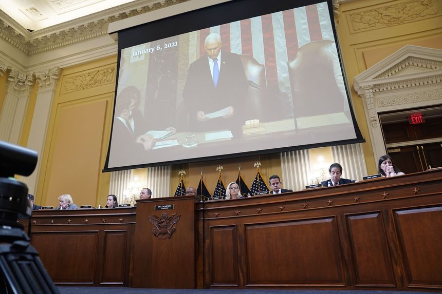 |
| 2022-06-22 16:05:00 | Opinion | LIV Golf, Saudi Arabia and PGA Hypocrisy | Check out the dudes at the U.S. Open sporting the swoosh on their shirts, shoes and more. | As a golfer, I agree with Daniel Henninger (“LIV From the U.S. Open,” Wonder Land, June 16) about golf’s infuriating vicissitudes; variability in my tee shots is a 40-year mystery. I do not, however, understand the hand-wringing about golfers wanting a return on their countless hours of practice and hard work. Competitive playing days are finite. Why not spend some on tours offering money for showing up to compete? Aren’t Phil Mickelson, Dustin Johnson and others merely repatriating dollars sent to Saudi Arabia for the fossil fuels we decline to pump out of the ground in the U.S.? |
|
| 2022-06-22 16:04:00 | Opinion | Reagan’s Policies Caused Clinton’s Prosperity | After big GOP wins in 1994, the president executed a policy twirl worthy of the Flying Wallendas. | William Galston waxes about the glories of Bill Clinton’s eight years in the White House in “Bill Clinton’s Recipe for Economic Growth” (Politics & Ideas, May 18). But prosperity came during his presidency only because Mr. Clinton capitulated to Ronald Reagan’s common-sense conservatism. Mr. Clinton’s first two years in office ended in electoral disaster. Determined to go on a high-tax, big-spend binge after winning the presidency, he narrowly won a major income-tax increase in the Democratic-controlled Congress. Congressional Republicans were instrumental in blocking many of his other expensive initiatives. |
 |
| 2022-06-22 15:58:00 | Risk & Compliance Journal | U.K. Regulator Fines JLT Specialty $9.7 Million for Bribery | Insurance broker that is now part of Marsh & McLennan had failed to manage risks effectively, leading to bribes of more than $3 million, U.K. Financial Conduct Authority says | 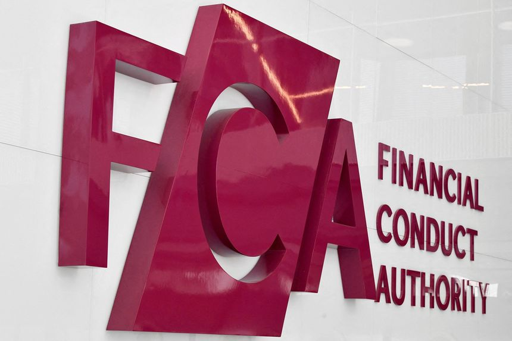 | |
| 2022-06-22 12:52:00 | Risk & Compliance Journal | Small Businesses Plead With SEC to Show Restraint on Climate Rules | While larger companies gave the SEC’s climate proposal mixed reviews, comment letters from small business groups had a tone closer to existential dread | ||
| 2022-06-22 12:19:00 | Opinion | Economic Strains Test Eastern Europe’s Support for Ukraine | Inflation and recession will stress popular support for a hard line against Russian aggression. | Prague There’s a common refrain among Eastern European politicians. Ukrainian resistance, they say, is all that stands between their countries and Russian military aggression. Yet the effects of Vladimir Putin’s war have already been felt, first in a refugee crisis, and now in economic fallout that poses a major threat to regional unity. |
|
| 2022-06-22 12:19:00 | Opinion | Treasury Threatens to Double-Tax Some Businesses | Limiting credits for overseas levies could end up costing American jobs. | The last thing America needs is job losses. That’s what we’ll get if the Biden administration doesn’t reverse its plan to double-tax some of the country’s largest corporations. Earlier this year, the Treasury Department finalized regulations that could have a disastrous impact on American businesses operating in foreign countries. In President Biden’s most influential tax change yet, the Treasury limited the ability of companies to claim Section 901 foreign tax credits for income taxes paid in foreign countries. Some businesses will have to pay domestic corporate income taxes on top of the foreign taxes they already pay. |
|
| 2022-06-22 11:00:00 | Economy | Canada’s Inflation Surge Continues, Boosting Expectations for Big Rate Rise | Canada’s May CPI climbed 7.7% from a year ago, reinforcing market views that the Bank of Canada will hike its policy rate by 0.75 percentage point | OTTAWA—Annual inflation in Canada accelerated in May toward 8%, reaching a nearly four-decade high and all but locking in market expectations that the country’s central bank will raise its policy interest rate by three quarters of a percentage point in July. Economists expect inflation in Canada to surpass 8% when June data are released, and possibly stay above 7% for the bulk of 2022. The need for aggressive Bank of Canada rate increases to tame inflation has prompted analysts to predict a sharp slowdown in economic growth starting in the second half of this year, and to warn of heightened risks of a recession. |
|
| 2022-06-22 08:24:00 | Central Banks Research | Fed Paper Finds Elevated Probability of Recession | Historically, high inflation and low unemployment have preceded downturns | The U.S. economy faces elevated risks of a recession over the next one to two years due to rising imbalances in markets for goods and services, including labor, according to a new research paper from a Federal Reserve economist. The paper finds slightly more than a 50% chance of a recession over the next four quarters and a two-thirds probability of a downturn over the next two years, according to various models analyzed by Michael Kiley, a senior central bank economist, in a report published Tuesday. |
|
| 2022-06-22 07:30:00 | CFO Journal | Companies Review Hedging Strategies as Strong Dollar Cuts Profits | Coca-Cola, Microsoft and Salesforce are among the companies that have pointed out the negative effect of the strong dollar on their financial results | ||
| 2022-06-22 05:30:00 | Pro Cyber News | Cyber Funding, Plentiful for Years, Faces a Reckoning | Cooling late-stage activity and a market downturn mean a power shift in cyber venture capital is under way, investors say | ||
| 2022-06-22 05:30:00 | Management | More Companies Start to Rescind Job Offers | The labor market remains hot. Yet businesses in a range of industries are pulling back job offers to recruits they were courting just a short time ago | ||
| 2022-06-21 19:51:00 | CFO Journal | Kellogg’s CFO Faces Challenge of Splitting Balance Sheet Three Ways | The food company plans to spin off its North American cereal and plant-based food businesses | ||
| 2022-06-21 19:08:00 | Opinion | Betsy DeVos’s Mission to Rescue Teachers Unions’ ‘Hostages’ | In an interview, the former education secretary says she thinks the pandemic was an inflection point. | The philanthropist and veteran school-reform advocate who served as education secretary under President Trump says the Covid pandemic was an inflection point. “During the last two years, the failings of the school system have been laid bare to families in a way like never before,” Betsy DeVos told me by phone on Monday. “I think it’s hastening the moment in time when we will be able to get significant policy change implemented to support families and kids rather than the system.” That “system” is the subject of Mrs. DeVos’s new book, “Hostages No More: The Fight for Education Freedom and the Future of the American Child.” The title is taken from Horace Mann, the 19th-century politician and educator who is widely credited with founding the public-school apparatus. “We who are engaged in the sacred cause of education,” Mann once wrote, “are entitled to look upon all parents as having given hostages to our cause.” In a book that is part memoir and part school-reform manifesto, Mrs. DeVos makes a compelling case for freeing the hostages. |
|
| 2022-06-21 18:48:00 | CIO Journal | Corporate Investors Fill Startup Funding Gap as VC Firms Pull Back | Many corporations are playing the role of venture-capital investors, providing startups with capital and access to networks of potential customers | ||
| 2022-06-21 18:37:00 | Opinion | A Woke Mandate for the Federal Reserve | Biden endorses racial equity as a third central bank priority. | President Biden recently promised in these pages not to interfere with the Federal Reserve. Yet last week he endorsed a House bill that would add racial equity to the Fed’s dual mandate of price stability and full employment. How does the White House square this contradiction? The House bill passed last week 215-207 with little media notice. But it deserves attention because it reveals how the Biden Administration and Democrats plan to politicize monetary policy and financial regulation. |
|
| 2022-06-21 18:33:00 | Opinion | Eric Greitens Outdoes Himself as a RINO Hunter | Here’s why Democrats want the disgraced former Governor to win the GOP Senate nomination in Missouri. | Republicans should be able to retake the Senate in November, but they may blow their chance by nominating candidates whom too many voters find offensive. A leading example is Missouri Republican Senate candidate Eric Greitens, who is running a TV ad that shows remarkably bad judgment, even for him. The online ad has Mr. Greitens toting a shotgun and declaring that he’s hunting for “RINO,” short for a Republican In Name Only, who the ad says “feeds on corruption and is marked by the stripes of cowardice.” Armed men in military gear break into a home in the ad, followed by Mr. Greitens, who exhorts: “Join the MAGA crew. Get a RINO hunting permit. There’s no bagging limit, no tagging limit, and it doesn’t expire until we save our country.” |
|
| 2022-06-21 18:32:00 | Opinion | Religion, Schools and the Supreme Court | The Justices say Maine’s tuition program can’t exclude the faithful. | Chief Justice John Roberts delivered another opinion Tuesday that might inspire religious believers to thank God for the First Amendment. Some parts of Maine, which is the nation’s most rural state, don’t operate their own high schools. Rather, they send tuition money to the school of the family’s choice. But religious schools are specifically excluded. “That is discrimination against religion,” the Chief Justice writes for a 6-3 majority in Carson v. Makin. Maine’s policy thus infringes on the Constitution’s guarantee of religious “free exercise.” This case is similar to one the Court heard from Montana two years ago. As the Chief wrote then: “A State need not subsidize private education. But once a State decides to do so, it cannot disqualify some private schools solely because they are religious.” |
|
| 2022-06-21 18:30:00 | Opinion | Justice Sotomayor’s Class-Action Consolation Prize | Employers win a Supreme Court arbitration case, but the liberal Justice offers unions and trial lawyers a road map to nullify it. | The Supreme Court last week ruled 8-1 (Viking River Cruises v. Moriana) that California’s Private Attorneys General Act (PAGA)—aka the trial lawyer enrichment act—doesn’t supersede class-action waivers. Now watch unions and trial lawyers turn lemons into lemonade with a recipe from Justice Sonia Sotomayor. Viking employee Angie Moriana agreed when she was hired to arbitrate disputes individually. But after leaving the company she sued Viking under PAGA for failing to provide final wages within 72 hours as required by state law. Ms. Moriana added to her complaint violations allegedly suffered by others. |
|
| 2022-06-21 18:14:00 | Opinion | How to Stop Russia’s Plan for Global Food Chaos | A naval coalition of the willing could ensure that Ukrainian grain is able to reach foreign ports. | About 25 million tons of grain now sit in Ukrainian silos blockaded by Russian ships. By disrupting global food and energy supplies, the Kremlin seeks to spark multiple international crises, forcing the West to pressure Ukraine into negotiations. The U.S. should spoil Russia’s strategy by establishing a maritime corridor with a naval coalition of the willing to ensure Ukrainian grain can reach foreign ports. That would alleviate the global food crisis while undermining a key element of Russian leverage over Ukraine and its allies. From his initial military buildup, Vladimir Putin has aimed to shock Kyiv and the West into submission without having to martial the forces necessary to conquer Ukraine outright. Moscow has pushed to achieve objectives that aren’t geostrategic in the usual sense of allowing Russian forces an easier military victory, but that instead could put pressure on Ukraine’s allies to back off and force President Volodymyr Zelensky to capitulate. |
|
| 2022-06-21 17:54:00 | Opinion | The Worst Time for a Global Minimum Tax | Hungary declines to discourage investors during an economic crisis. | The European Union is entering a time of economic crisis. The war and sanctions are causing unprecedented challenges: rising interest rates and inflation, spiking food and energy prices, and supply-chain disruptions. Governments must make their countries’ economic interests the priority and address the cost-of-living crisis. Adopting the European Commission’s minimum-tax directive now would be a profound mistake. The directive is based on rules published in 2021 by a group of more than 100 countries collaborating to address tax challenges in the digital economy. It has two pillars: The first aims to put an end to big tech firms’ tax avoidance by making them pay their fair share of tax where their activities are performed and where their profit is created. The second aims to introduce a minimum 15% tax on corporate profit world-wide to put a floor on tax competition. The global tax deal was planned to come into force in 2023, but in May OECD Secretary-General Mathias Cormann announced that it may take longer to implement. |
|
| 2022-06-21 17:51:00 | Opinion | Panic Over Gasoline Prices Only Serves Putin | Adaptability needs to be the rediscovered strength of the West’s market economies. | Actually, today’s oil price isn’t that high. The recent peak of $128, after inflation, is still $33 lower than the price in April 2011. For all the talk of Ukraine, 55% of the current increase since last December occurred prior to the Russian invasion. Even more important to note: The rise in retail gasoline has been disproportionately large in relation to the underlying oil price hike. If gasoline had risen as much in April 2011, consumers would have paid the equivalent of $6.72 a gallon (in fact, they paid about $5 in 2022 dollars). So something else is going on and that something is a normal adjustment to an abnormal event: a two-year global pandemic that knocked gasoline demand for a loop. It caused dozens of refineries to be idled, some of which (especially in the U.S.) were so creaky that it made no sense to restart them. Then, on top of these supply-demand effects, add 13% cumulative inflation since early 2020. |
|
| 2022-06-21 17:46:00 | Opinion | Team Biden’s Endless Campaign to Make Energy Expensive | Former SEC officials blast the agency’s effort to enact environmental rules. | Every week it seems the White House has a new political gimmick intended to suggest opposition to high gasoline prices. But beneath the public relations, voters should observe the broad administrative campaign to make energy more expensive. As if Washington doesn’t already have enough environmental regulators, Biden appointees with no expertise on the subject and no authorization from Congress are attempting to enact climate rules that don’t even appear to be legal. That’s the warning from former leaders of the Securities and Exchange Commission, who must be wondering what on earth has become of the capital markets overseer they used to run. Last week this column noted the pushback from Senate Republicans to a pending SEC rule that would impose on companies of all kinds vast new reporting requirements on global-warming risks. This is the Biden whole-of-government approach to discouraging the use of fossil fuels, forcing companies to publish more data that may have no impact on profitability but will be useful for climate activists seeking to attack business. Now in a new letter to the commission, former SEC chairmen Richard Breeden and Harvey Pitt and former SEC commissioners Philip Lochner, Richard Roberts and Paul Atkins explain how the pending rule would pollute company reports with politics: |
|
| 2022-06-21 17:46:00 | Opinion | Would Universities Defend Dissident Voices? | Students discuss whether their colleges would help if social-media mobs attacked them. | ||
| 2022-06-21 17:42:00 | Logistics Report | New York vs. New Jersey Port Fight Heads to U.S. Supreme Court | Justices will decide whether New Jersey can unilaterally withdraw from agency set up to fight crime on the waterfront | ||
| 2022-06-21 16:19:00 | CFO Journal | Audit Watchdog Stiffens Rules on Lead Auditors’ Supervision of Outsiders | The new standard from the Public Company Accounting Oversight Board will require lead auditors to obtain avowals from outside auditors on the quality of their work | ||
| 2022-06-21 14:47:00 | Opinion | The Jan. 6 Committee Hearings: The Big Picture | Your guide through the evidence and what to expect as the congressional investigation holds its public questioning on Trump and the Capitol riots. | The Jan.6 committee is investigating what some are calling an insurrection at the U.S. Capitol in a series of televised hearings. The Opinion pages of The Wall Street Journal look at the events, evidence, and the impact on the political landscape in America. |
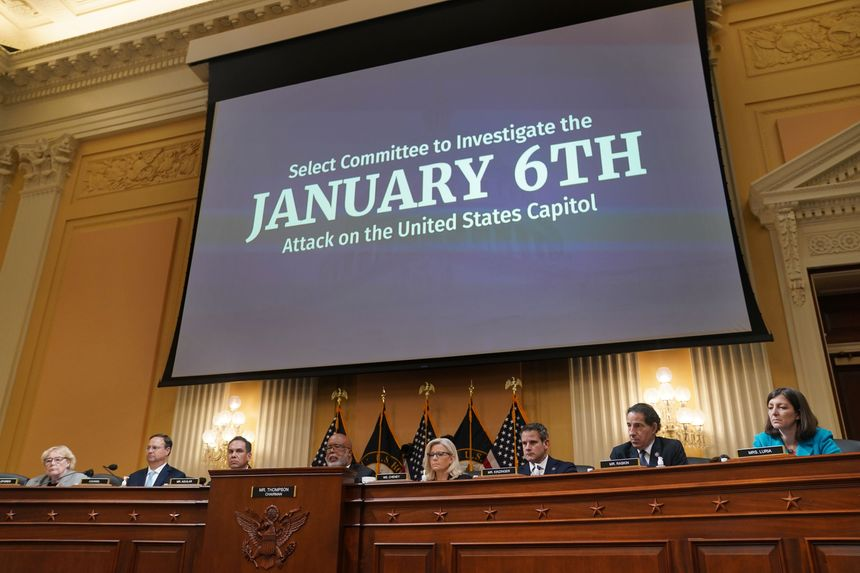 |
| 2022-06-21 14:25:00 | Opinion | Making Markets Work for More Than Big Tech | Sen. Chuck Grassley and Rep. Ken Buck respond. | Your editorial “Breaking Big Tech Bad” (June 6) critiques our pending legislation, the American Innovation and Choice Online Act, suggesting that we are “posing as defenders of small business.” If that’s how we look, it’s because that’s where we’re aiming. Our legislation restores competition to a broken market in which small- and medium-size businesses are at the mercy of Big Tech platforms to reach customers. Ample evidence illustrates how Big Tech has engaged in anticompetitive behavior that has hurt businesses and consumers. If current law were enough to deal with the monopolistic behavior, there would have been straightforward judgments from the courts and penalties from regulators to curtail the behavior. |
|
| 2022-06-21 14:24:00 | Opinion | The Surging Cost of America’s Naval Defense | It is difficult to imagine spending close to one-trillion dollars annually just to maintain the current force. | Regarding your editorial “China’s Great Naval Leap Forward” (June 8): It may be that as the U.S. exaggerated Russian military power, the same is occurring with China. Much of China’s navy consists of small Type 22 patrol boats. In striking power, the U.S. Navy is, and will remain, far superior. Nevertheless, the decline in U.S. naval numbers—and the same is true for the other services—reflects a dilemma that may not be resolved by money alone. Over the past 60 years, the more the U.S. spends on defense, the more the force shrinks. |
|
| 2022-06-21 14:23:00 | Opinion | Jared Polis Capitulates to the Climate Lobby | The Colorado governor vetoed a bad bill only because a far worse one had already made its costly mandates redundant. | Your editorial “Jared Polis Bucks the Climate Lobby” (June 13) offers plaudits to the Colorado governor for vetoing an electric-vehicle-charging mandate. While that bill was misguided, and its demise is cause for celebration, it was vetoed only because a far worse bill had already made its costly mandates redundant. H.B.1362, which was signed by Gov. Polis five days before his EV-mandate veto, will usurp authority from local governments across Colorado by imposing a statewide minimum standard for residential and commercial building codes, much like the cost-raising mandates the editorial cites in California. |
|
| 2022-06-21 14:08:00 | CFO Journal | Companies Skewer SEC’s Climate-Disclosures Plan in Comment Letters | Businesses and others say regulator’s proposal poses heightened legal liability, hefty costs and reporting burdens | ||
| 2022-06-21 13:57:00 | Economy | Fed’s Barkin Supported FOMC’s Large Rate Increase | Richmond Fed chief has ‘no problem’ with Powell’s guidance for July FOMC meeting | Federal Reserve Bank of Richmond President Thomas Barkin said Tuesday he was on board with last week’s supersize rate rise by the Fed and expects more aggressive moves by the central bank as it seeks to lower high inflation levels. “I was definitely supportive” of the 75-basis-point rate rise the Fed implemented last week, Mr. Barkin said in a virtual appearance. “We are in a situation where inflation is high, it’s broad based, it’s persistent, and rates are still well below normal…I think the spirit is you want to get back to where you want to go as fast as you can without breaking anything.” |
|
| 2022-06-21 13:22:00 | Risk & Compliance Journal | Glencore Subsidiary Pleads Guilty to Bribery Charges in U.K. | Unit enters a guilty plea in London as part of a series of deals the commodities giant struck with authorities in the U.S., U.K. and Brazil last month over allegations of bribery and market manipulation | ||
| 2022-06-21 13:20:00 | Opinion | Apprenticeships, Not College, Can Help Reduce Unemployment | A flexible, industry-driven alternative for workforce education has a proven record of success. | At the World Economic Forum in January, Treasury Secretary Janet Yellen called for a “modern supply-side approach” to maximize America’s economic potential. She said the U.S. must adopt policies that will increase the supply and productivity of workers. She’s right about the goal but wrong about the policies. An accurate diagnosis of what is affecting the labor market requires careful attention to chronic and acute problems. One chronic problem is that the share of adults working or looking for work has been generally falling for the past 20 years. Most of this decline has been driven by baby boomers’ entering retirement, but that doesn’t explain it all. Another significant factor is that men of prime working age, 25 to 54, are less likely to work today than those of previous generations. |
|
| 2022-06-21 13:19:00 | Opinion | Return of the Arsenal of Democracy | As the Ukraine war drags on, it will test America’s and the West’s commitment. | With slow but steady Russian advances in the Donbas, the war for Ukraine has entered a new phase. The West must decide how to respond, now and in the long run. After initial defeats, the Russians are waging war the only way they know how—with brute force. They are using their long-range artillery to pulverize key targets and to make it costly for concentrations of Ukrainian troops to hold their positions. Only after relentless shelling has softened their targets do Russian troops move in. Military analysts believe that this strategy has reduced Russian losses to a sustainable pace, and Ukrainian officials are not hiding their own rising casualty rates. |
|
| 2022-06-21 12:33:00 | Logistics Report | Companies Face Rising Supply-Chain Costs Amid Inventory Challenges | Business logistics costs rose 22% in 2021, as companies worked to adjust to shifting consumer demand, a new report says | ||
| 2022-06-21 12:23:00 | CMO Today | Cannes Lions Has Company: Concurrent VidCon, NFT.NYC Events Compete for Marketers’ Attention | Marketers, ad agencies and executives are spreading across three events in mid-June as the industry transitions | ||
| 2022-06-21 08:00:00 | Real Estate | Empty Wall Street Offices to Be Revived as Apartments | 55 Broad St. in New York’s financial district will be turned into 571 apartments, one of the largest office conversions to be launched during the pandemic | A venture of two New York developers has purchased a one-third empty office building in the city’s financial district with plans to convert it into apartments, one of the largest such conversion schemes to be launched during the pandemic. The venture, which includes Silverstein Properties and Metro Loft, has agreed to pay $180 million for the 30-story building that opened in 1967 and has housed numerous technology and financial-services tenants over the decades. The new owners plan to convert it into 571 market-rate apartments, ranging from studios to three bedrooms, during the next three to four years. |
|
| 2022-06-21 08:00:00 | Real Estate | New York City Developer Launches Life-Science Venture | Taconic believes the city has the talent and funding for more lab space but not enough real estate | A New York City developer known for projects serving technology companies is doubling down on space for biotechnology laboratories and other life-science uses at a time when biotech stocks are being roiled by rising interest rates and upheaval in the capital markets. Taconic Partners, one of New York’s largest private owners and managers of lab space serving pharmaceutical and biotech companies, is consolidating its life-sciences portfolio into a new subsidiary named Elevate Research Properties. Elevate will control three life-sciences laboratories currently under development by Taconic. |
|
| 2022-06-21 07:03:00 | Markets | Green Energy’s Big Looming Problem Is Red Tape | Declining technology costs and low interest rates helped solar and wind take off; physical constraints could hamper future growth | Between rising interest rates and input costs, green-minded investors have a lot to worry about these days. Their biggest concern could end up being boring old red tape. Wind and solar, which require heavy upfront investment, grew rapidly over the past decade in the U.S. while certain conditions were just right. Interest rates were closer to zero for nine out of the last 13 years, during which time wind and solar generation increased more than sixfold. Over that same period, the cost of installing solar has declined almost 90%, while for wind it has fallen 72%, according to Lazard. Tax credits helped bring costs down, too. |
|
| 2022-06-21 07:00:00 | Markets | SPAC Slowdown Tests Asia’s Fledgling Market for Blank-Check Firms | So far just five blank-check companies have listed in either Hong Kong or Singapore | Two of Asia’s financial hubs aimed to reinvent the SPAC. So far, it is proving slow going. Exchanges in Hong Kong and Singapore have always said they aim for quality not quantity with their rules for blank-check companies, touting better investor protection than in the U.S. |
|
| 2022-06-21 06:49:00 | Markets | TikTok Left a Hole in India’s Net—Both Meta and Google Want to Fill It | Google is pumping capital into all the promising video bets in the country, hoping at least some of them pan out | TikTok’s eviction from India in 2020 left a gaping hole in the country’s fast-growing short-video market—one that Instagram and several homegrown rivals are fighting to fill. Many of these new Indian contenders are being cultivated by another American tech behemoth: Instagram-parent Meta ’s rival Google. Last week, Google participated in a $255 million funding round that valued Mohalla Tech—parent of local language social-media platform ShareChat and short-video app Moj—at $5 billion. Moj is one of India’s largest short-video platforms. Mohalla also counts Temasek and Tiger Global as investors. |
|
| 2022-06-21 06:41:00 | Markets | Stock Futures, Bitcoin Jump After S&P 500’s Worst Week in Two Years | The bullish mood was spread across many sectors and assets, including growth stocks and cryptocurrencies | U.S. stock futures climbed, offering investors a reprieve from a recent stretch of whipsaw trading that had sent stocks and cryptocurrencies falling. Futures for the S&P 500 gained 1.8% Tuesday, while those for the Dow Jones Industrial Average added 1.7%. Contracts for the Nasdaq-100 jumped 1.9%. The U.S. stock market was closed Monday for the Juneteenth federal holiday. |
|
| 2022-06-21 06:00:00 | Deals | Procter & Gamble Ex-CEO David Taylor to Join Private-Equity Firm CD&R | Veteran executive is assuming role as a senior operating adviser after more than 40 years at the consumer-products company | David Taylor, former chief executive officer of Procter & Gamble Co. , is joining Clayton Dubilier & Rice LLC as a senior operating adviser, officials at the private-equity firm said. Mr. Taylor stepped down as CEO of the consumer-products company last November after a career of more than 40 years there but remained executive chairman. He will cede that role to his successor as CEO, Jon Moeller, before starting at CD&R on July 1. |
|
| 2022-06-21 05:47:00 | Markets | With Markets in Disarray, International Investors Are Stockpiling U.S. Dollars | Foreign investors, concerned about soaring inflation and a global slowdown, are keeping their cash in the U.S. currency | Foreign investors selling stocks and bonds are hoarding the U.S. dollar as market volatility picks up. Typically investors repatriate cash into their local currency, but not this time. U.S. capital flow data show the foreign cash pile of dollars is close to records as investors reduce risky assets in portfolios and hang on to the world’s reserve currency. |
|
| 2022-06-21 05:30:00 | Markets | Florida Homeowners to Pay Higher Premiums as Reinsurers See Risks and Pull Back | Storm risks and a wave of questionable claims lead to another year of higher rates | Home insurance rates are going up again in Florida, as rate increases by reinsurers get passed on to homeowners. Reinsurers are reacting partly to five years of outsize losses from catastrophes around the globe, though Florida has been largely spared. Many are concerned that storms and wildfires are intensifying as a result of climate change. Reinsurers backup insurers, helping them pay claims. |
|
| 2022-06-21 05:30:00 | Markets | Inflation Collides With Growth Fears to Trigger Big Swings in the Bond Market | 10-year Treasury yield nearly reached 3.5% after inflation report but dropped as investors grew more worried about growth | A battle has broken out in bond markets, pitting investors’ fears of inflation against their concerns about slowing growth. The result is heightened volatility and a cloudy outlook for other investments. Recent data showing inflation broadening and accelerating drove up Treasury yields last week, but the climb obscured outsize swings. In just one 15-hour stretch on Thursday, the yield on the benchmark 10-year U.S. Treasury note started at around 3.2%, climbed to roughly 3.5% and then fell to 3.18%, charting a gain and a loss that in a different time could each have taken weeks. Yields rise when bond prices fall. |
|
| 2022-06-20 17:55:00 | Markets | JetBlue Lifts Offer for Spirit Airlines, Commits to Selling Assets | Spirit had postponed a shareholders’ vote on merger with Frontier as it weighs competing offer from JetBlue | JetBlue Airways Corp. is continuing its quest to buy Spirit Airlines Inc., increasing its offer and strengthening its commitment to divest itself of assets to get regulatory approval for the deal. JetBlue on Monday increased its offer to $33.50 in cash per Spirit share. Previously, it had offered $31.50 per share. |
|
| 2022-06-20 17:21:00 | Markets | Mondelez to Acquire Clif Bar for $2.9 Billion | Deal adds the brands Clif Bar, Luna and Clif Kid to the company’s food business | Mondelez International Inc. on Monday announced it will acquire Clif Bar & Co. for at least $2.9 billion. The deal adds the brands Clif Bar, Luna and Clif Kid to Mondelez’s food business. The company said it expects the deal to close in the third quarter. |
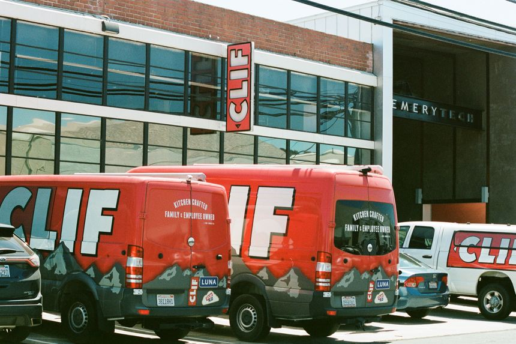 |
| 2022-06-20 16:54:00 | Opinion | A Plan to Get Americans Back to Work | My bill would expand job requirements for food assistance and public housing. | The American dream is rooted in a simple principle: If you’re willing to work hard, anything is possible. What’s troubling is that our leaders have lost sight of this. For our country to thrive, we can’t let their toxic plan of increased handouts and getting something for nothing continue. We need to value showing up and going to work. I believe in the American dream because I’ve lived it. I grew up poor, lived in public housing, and watched my parents struggle every day to feed our family. My mom didn’t have much to give me and my siblings, so she instilled in us the value of hard work. I believe that any able-bodied, working-age adult who receives government benefits ought to work. That means those who receive benefits paid for with taxpayer dollars would have skin in the game and contribute to our economy. |
|
| 2022-06-20 16:54:00 | Opinion | Semiconductor Dependency Imperils American Security | The U.S. Innovation and Competition Act is only the first step in preventing Chinese dominance. | Morris Chang, founder of Taiwan Semiconductor Manufacturing Co. , gave a rare interview in April. He believes Congress’s current effort to provide $50 billion in subsidies to American semiconductor companies, in the hope that they will become industry leaders, is “a very expensive exercise in futility.” While he may be correct that U.S. firms are unlikely to overtake TSMC, that isn’t the point: Complete dependence on Taiwan for advanced semiconductors puts American national security at risk. TSMC manufactures 92% of the advanced semiconductors necessary for every smartphone, laptop and ballistic missile. U.S. firms such as Nvidia, Qualcomm and Apple outsource almost all their manufacturing to Taiwan. If Taiwan’s chip manufacturing capacity went offline or fell into China’s hands, America’s technology sector would be devastated. As former Deputy Defense Secretary Robert Work has warned, conflict in the Taiwan Strait could spark a national-security crisis over chips: “We’re 110 miles”—the distance from Taipei to the mainland—“away from going from two generations ahead to maybe two generations behind.” |
|
| 2022-06-20 16:52:00 | Opinion | Slouching to Saudi Arabia | Biden’s reluctant decision to visit MBS will reset a vital strategic relationship. | Future American officials should carefully study the evolution of the Biden administration’s approach to Saudi Arabia. It’s a textbook example of the damage that good intentions can do when linked with weak analysis. Yet the universe is sometimes forgiving. Even after the latest flurry of gaffes, strong and serious leadership from President Biden can put a vital relationship back on its feet. Democratic opposition to the U.S.-Saudi relationship began soon after Franklin D. Roosevelt met with King Abdul Aziz aboard the Navy heavy cruiser USS Quincy in 1945. The Eisenhower administration’s preference for good relations with the Arab world over support for Israel struck many contemporary Democrats as a favor to American oil companies heavily invested in the kingdom. The Organization of the Petroleum Exporting Countries’ predatory pricing during the 1970s made Arabs generally—and Saudis especially—unpopular. Saudi treatment of women infuriated American feminists, and as climate activists grew more influential in Democratic politics, Saudi oil was seen as a threat to the planet. The Saudi origins of the 9/11 bombers combined with the close ties between the Bush family and the Saudi royals taught a new generation of Democratic activists to loathe the House of Saud. |
|
| 2022-06-20 16:52:00 | Opinion | Jan. 6 Pitted a Conspiracy of RINOs Against a Confederacy of Dunces | The latter’s theory has it that the most dependable Trump supporters plotted to deny his re-election. | Conspiracy theories demand a suspension of disbelief from their subscribers that almost always collapses under the intolerable weight of their own simple insanity. If the hearings of the congressional committee on the Jan. 6 attack achieve little else, they are a reminder of that enduring truth. Like many viewers, I suspect, I have found the antics of the Democrats in these proceedings dispiriting. Through her instinctual hyperpartisanship, Speaker Nancy Pelosi has nearly succeeded in turning what should have been a thorough investigation of the causes of that terrible event into a show trial of her political enemies. Keeping critics off the committee and letting its proceedings be run without a word of dissent undermines its legitimacy and persuasive force. And if the past few years have taught us anything they have surely taught us that any process in which Adam Schiff is prominently involved is discredited almost by definition. |
|
| 2022-06-20 16:41:00 | Opinion | Notable & Quotable: Justice Sotomayor on Justice Thomas | ‘He is a man who keeps cares deeply about the court as an institution, about the people who work there.’ | Justice Sonia Sotomayorspeaking to the American Constitution Society, June 16: |
|
| 2022-06-20 16:40:00 | Opinion | Petro and Colombia’s Rule of Law | Can the democracy survive a power-hungry leftist? | Former M-19 rebel Gustavo Petro won Colombia’s runoff presidential election Sunday with 50.5% of the vote. His opponent, businessman Rodolfo Hernández, received 47.3%. The rest of the votes were either left intentionally blank or annulled by electoral authorities. With nearly half of all voters declining to endorse Mr. Petro, there is no mandate for radical change. But don’t count on him to accept that reality. |
|
| 2022-06-20 14:38:00 | Opinion | Undoing the Covid ‘Taxpayer Heist’ | Scammers stole billions in pandemic aid. The GOP has a plan to crack down. | When the pandemic and lockdowns first arrived, lawmakers sent checks out the door without worrying much about who was cashing them. The result was no surprise: Fraudsters claimed a bigger-than-ever share of benefit payments over the past two years. Now with the emergency long past, House Republicans plan to recoup as much misspent cash as possible. GOP members of the House Ways and Means Committee introduced a bill this month to track the flow of wasted funds and fix the practices that enabled leakage. Citing the Labor Department, they say at least $163 billion of the $873 billion spent on unemployment insurance was spent in error, including “a significant portion attributable to fraud.” Only about $4 billion has been recovered. |
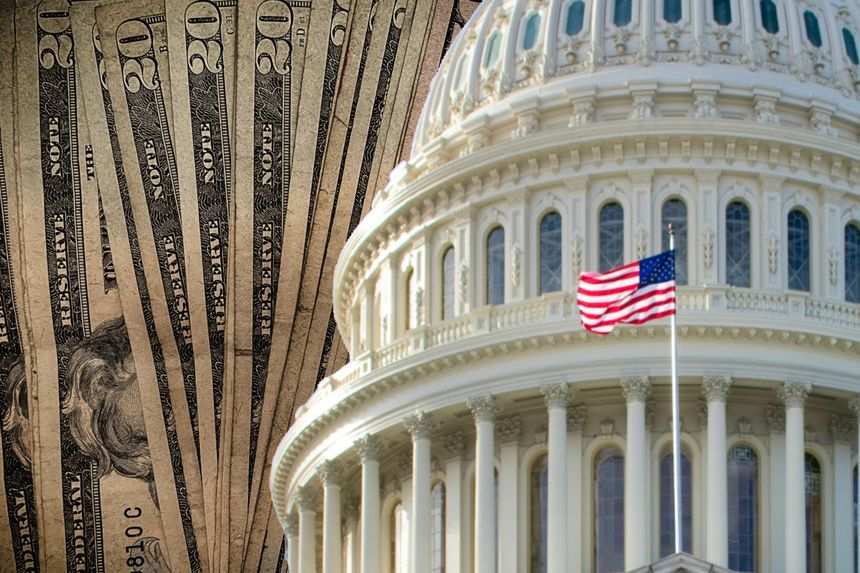 |
| 2022-06-20 12:45:00 | Economy | Fed’s Bullard Says He Expects Economic Expansion to Continue This Year | The St. Louis Fed leader says the central bank must meet market expectations for rate hikes | Federal Reserve Bank of St. Louis President James Bullard said the economy appears on track for more expansion this year, and that the central bank must meet market expectations for rate rises as part of its effort to rein in inflation. “U.S. labor markets remain robust, and output is expected to continue to expand through 2022,” Mr. Bullard said in materials for a presentation in Spain. But he added, “Risks remain substantial and stem from uncertainty around the Russia-Ukraine war and the possibility of a sharp slowdown in China.” |
|
| 2022-06-20 11:57:00 | Markets | Activists Target Nelson Peltz’s Trian Over U.K. Fund | A group of investors, including two companies that were targets of Mr. Peltz, is seeking changes to the London-listed investment vehicle | A group of investors is agitating for change at a London-listed investment vehicle managed by shareholder activist Trian Fund Management LP, arguing that the company has deviated from its original purpose when it went public nearly four years ago. The group, made up of Invesco Ltd . , Janus Henderson Investors UK Ltd., Pelham Capital Ltd. and Global Value Fund, said Monday it is calling on the company’s board to convene an extraordinary general meeting of its shareholders and swap out current directors. |
|
| 2022-06-20 11:10:00 | Opinion | The Rich World’s Climate Hypocrisy | They beg for more oil and coal for themselves while telling developing lands to rely on solar and wind. | The developed world’s response to the global energy crisis has put its hypocritical attitude toward fossil fuels on display. Wealthy countries admonish developing ones to use renewable energy. Last month the Group of Seven went so far as to announce they would no longer fund fossil-fuel development abroad. Meanwhile, Europe and the U.S. are begging Arab nations to expand oil production. Germany is reopening coal power plants, and Spain and Italy are spending big on African gas production. So many European countries have asked Botswana to mine more coal that the nation will more than double its exports. The developed world became wealthy through the pervasive use of fossil fuels, which still overwhelmingly power most of its economies. Solar and wind power aren’t reliable, simply because there are nights, clouds and still days. Improving battery storage won’t help much: There are enough batteries in the world today only to power global average electricity consumption for 75 seconds. Even though the supply is being scaled up rapidly, by 2030 the world’s batteries would still cover less than 11 minutes. Every German winter, when solar output is at its minimum, there is near-zero wind energy available for at least five days—or more than 7,000 minutes. |
 |
| 2022-06-20 11:10:00 | Opinion | The Attacks on Crisis-Pregnancy Centers | Whether violent or legal, they amount to a repudiation of the ‘pro-choice’ creed. | Luke Cirillo got a call from police in the wee hours of June 10. Someone “threw an incendiary through one of the windows, which lit a significant fire in the back room,” says the CEO of First Image, which runs three crisis-pregnancy centers in the Portland, Ore., area. The room was destroyed, and the center, in Gresham, is temporarily closed. It was the second attack at a First Image facility in as many months. On May 5, vandals shattered windows and spray-painted “F— CPCs”—crisis-pregnancy centers—on the wall in Southeast Portland. |
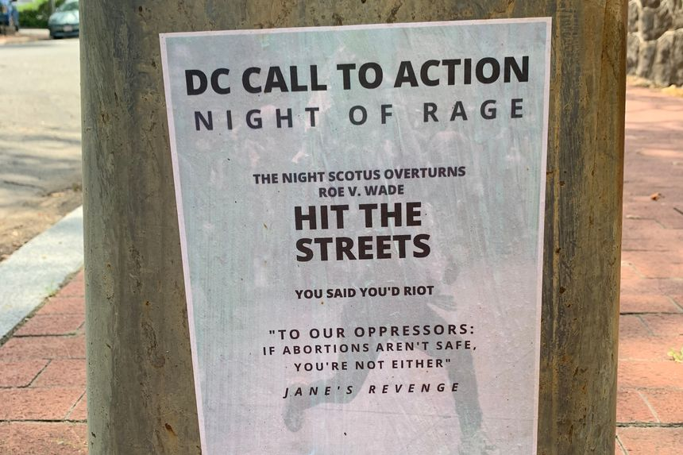 |
| 2022-06-20 11:09:00 | Opinion | Red Flag Laws Can Save Lives | They won’t prevent all mass shootings, but they will stop some shooters before they decide to start killing. | Senate legislation on gun violence is likely to include “support for crisis intervention,” which will mean funding and incentives for states to implement extreme risk protection orders, also known as ERPOs or “red flag” orders. This policy compromise could save lives. We are part of a team from eight universities, funded by the National Collaborative on Gun Violence Research, that is analyzing ERPO petitions across six states. Our preliminary findings show the scale of mass-shooting threats is larger than we could have imagined. We found that 9.5% of orders are for mass-shooting threats—that’s 626 cases from 2013-20 in which there’s a credible threat presented to a judge. |
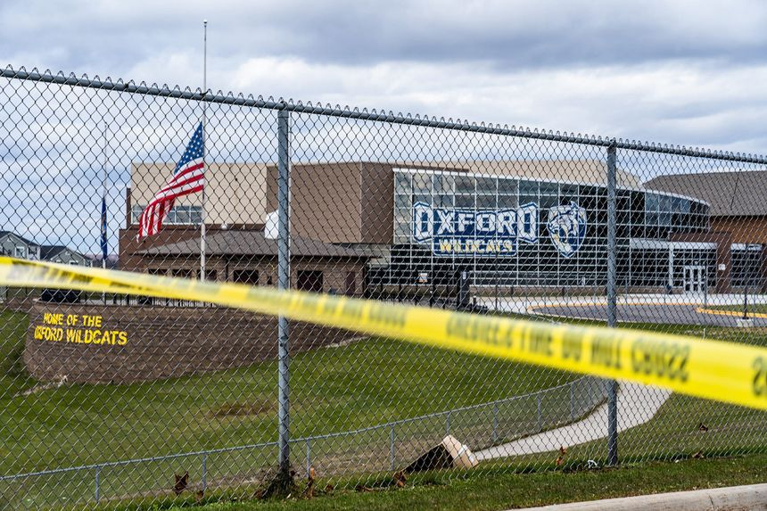 |
| 2022-06-20 11:06:00 | Opinion | A ‘Night of Rage’ on Abortion | The shadowy group Jane’s Revenge issues a call to ‘riot’ against the Supreme Court if it overturns Roe v. Wade. | As the nine Justices prepare to issue their final opinions of the current term, barricades are going up around the Supreme Court building. It’s a sad but necessary security measure because violence can’t be ruled out in response to the rulings. The threat is explicit on abortion, as the arrest of an armed man outside Justice Brett Kavanaugh’s home attests. Demonstrators continue to protest outside the homes of some Justices, and now comes a vow from the shadowy group that calls itself Jane’s Revenge to commit what sounds like what Democrats would call insurrection if it were aimed at another part of government. |
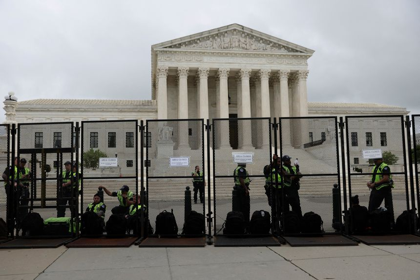 |
| 2022-06-20 11:02:00 | Opinion | A Bad Day for Emmanuel Macron | The French President’s legislative allies lose their majority, as parties on the left and right rise. | The French political system is designed to empower the President, and Emmanuel Macron has enjoyed sweeping authority in his first five years in the Elysée Palace. But legislative elections on the weekend ensured his second term will be far more complicated. Mr. Macron easily won a second mandate in April, but on Sunday his allies lost control of the National Assembly. His centrist Ensemble block won 245 seats, well short of the 289 needed for an absolute majority. It’s a significant fall from the 350 Mr. Macron’s group won in 2017. |
|
| 2022-06-20 09:30:00 | Markets | ETF That Bets Against Bitcoin to Launch | First exchange-traded fund to short the world’s biggest digital currency to debut amid crypto’s huge price slide | Financial firm ProShares is ready to roll out the first U.S.-listed short bitcoin futures exchange-traded fund this week, allowing investors to effectively bet against the largest cryptocurrency after its price tumbled below $20,000 over the weekend. The Bethesda, Md., firm’s fund, the will trade on the New York Stock Exchange and go by the ticker BITI. |
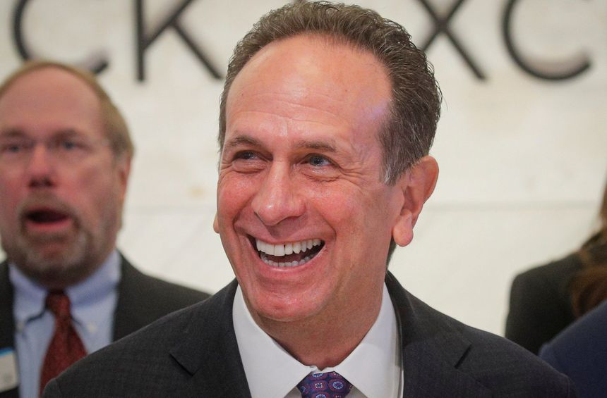 |
| 2022-06-20 08:00:00 | Markets | In Today’s Market, Poor Performance Still Pays | If you want to invest in the next public offering, read the fine print. Some executives’ compensation is better aligned with shareholder interests than others. | In a perfect world, public companies would compensate their executives commensurate with the creation of long-term shareholder value. Last year, the median compensation for U.S. chief executives reached a record high for the sixth consecutive year, The Wall Street Journal reported earlier this month. While most pay packages are bolstered by restricted stock units that might never pay off, several handsomely paid executives last year helmed newly public companies that saw their stocks pop and quickly flop. A close examination of their incentives indicates that some packages proved far more shareholder-friendly than others. |